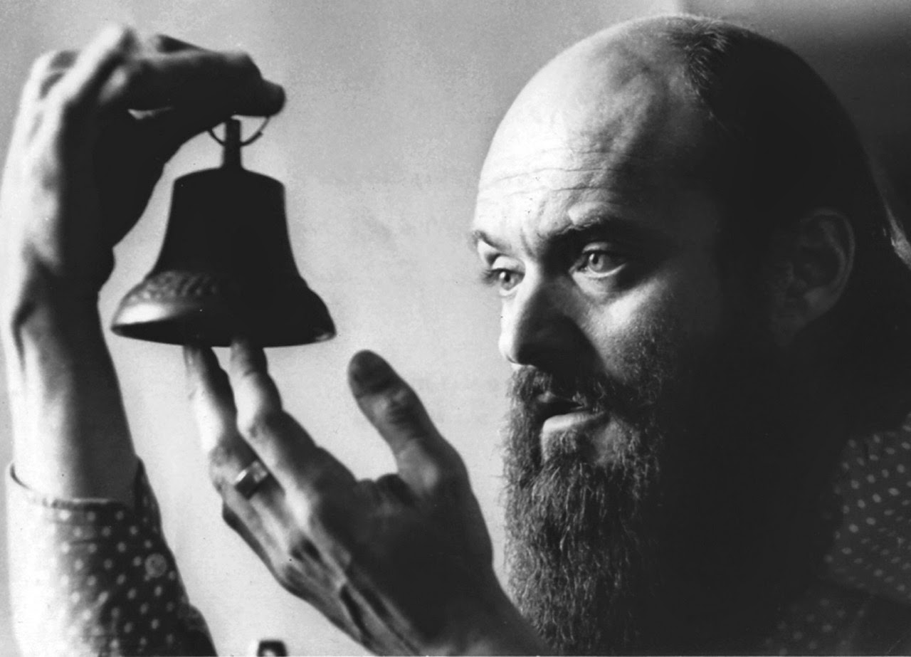

"Podría comparar mi música con la luz blanca que contiene todos los colores. Solo un prisma puede dividir los colores y hacerlos aparecer; este prisma podría ser el espíritu del oyente." Arvo Pärt

La educación musical de Pärt comenzó a los siete años de edad. A los catorce o quince años escribió sus primeras composiciones. Mientras estudiaba composición (con el maestro Heino Eller) en el conservatorio de Tallin se decía de él que "parecía que cuando se sacudía las mangas se le caían las notas".
Durante ese periodo tuvo muy pocas influencias externas de la Unión Soviética, exceptuando algunas grabaciones y partituras ilegales. Aunque en el momento de su nacimiento Estonia era un estado independiente, la URSS ocupó el país en 1940 como resultado del pacto Mólotov-Ribbentrop (entre la Unión Soviética y el Tercer Reich) y el país permaneció bajo el control de la Unión Soviética (excepto un período de tres años bajo ocupación alemana) durante 51 años.
La música de Part resultaba incómoda a los funcionarios soviéticos, por demasiado moderna y excesivamente religiosa. En todos esos años, Part se mantuvo retirado y fue desarrollando un nuevo lenguaje musical. A partir de 1980 Part tuvo que ir al exilio y emigró con su familia a Viena y luego a Berlín, donde residió muchos años. Desde entonces tiene la nacionalidad austríaca.
La obra de Pärt generalmente se divide en dos periodos. Sus primeros trabajos partieron de un neoclasicismo bastante severo (influido por Shostakóvich, Serguéi Prokófiev y Bela Bártok). Luego empezó a componer usando el dodecafonismo y el serialismo de Arnold Schoenberg. Sin embargo, esto no sólo atrajo la ira de los burócratas culturales soviéticos, sino también demostró ser un callejón creativo sin salida.
Pärt ha dicho que su música es similar a la luz que pasa a través de un prisma (óptica): la música puede tener un significado ligeramente diferente en cada oyente, creando un espectro de experiencias musicales, similar al arco iris. El compositor minimalista Steve Reich comentó acerca de Pärt: «Ya desde que estaba en Estonia, Arvo estaba sintiendo lo mismo que el resto de nosotros. [...] Amo su música y amo el hecho de que sea un hombre tan talentoso y valiente. [...] Está completamente fuera de la corriente dominante y sin embargo es enormemente popular, lo cual es muy inspirador. Su música llena una profunda necesidad humana que no tiene nada que ver con la moda».
Obras más conocidas.
Obras vocales y corales
Our Garden para coro de niños y orquesta (1959/2003)
Solfeggio para coro (1964/1996)
Credo para coro, orquesta y piano solo (1968)
An den Wassern zu Babel saßen wir und weinten para voces o coro y órgano (1976/1984)
Missa syllabica para coro y órgano (1977)
Summa para coro (1977)
Sarah Was Ninety Years Old para tres voces, percusión y órgano (1977/1990)
De profundis para voces masculinas, percusión (ad lib.) y órgano (1980)
Passio Domini Nostri Jesu Christi secundum Joannem para solistas, conjunto vocal, coro y conjunto instrumental (1982)
Es sang vor langen Jahren para mezzosoprano, violín y viola (1984)
Wallfahrtslied para tenor o barítono y cuarteto de cuerda u orquesta de cuerda (1984/2000)
Te Deum para coro, orquesta de cuerda y "tape" (1984–1985/1992)
Stabat Mater para tres voces y trío de cuerda (1985)
Magnificat para coro (1989)
Miserere para solistas, coro, conjunto y órgano (1989/1992)
Bogoróditse Djévo (rus. Богородице Дево) para coro (1990)
The Beatitudes (1990)
Berliner Messe para solistas SATB o coro con órgano u orquesta de cuerda (1990/1992)
7 Magnificat-Antiphonen para coro (1991)
Obras orquestales
Nekrolog para orquesta Op. 5 (1960)
Sinfonía n.º 1 para orquesta Polyphonic Op. 9
Perpetuum mobile for orchestra op.10 (1963)
Sinfonía n.º 2 para orquesta (1966)
Sinfonía n.º 3 para orquesta (1971)
Wenn Bach Bienen gezüchtet hätte ... para piano, quinteto de viento, orquesta de cuerda y percusión (1976)
Fratres para conjunto de cámara (1976 y posterior, existen numerosas versiones)
Arbos para ocho instrumentos de viento y percusión (1977/1986/2001)
Cantus In Memoriam Benjamin Britten para orquesta de cuerda y campana (1977)
Obras para instrumento solista y orquesta
Collage sur B-A-C-H para oboe, orquesta de cuerda, clavecín y piano (1964)
Pro et Contra concierto para violonchelo y orquesta (1966, dedicado a Mstislav Rostropovich)
Credo para coro, orquesta y piano solo (1968)
Tabula Rasa doble concierto para dos violines, orquesta de cuerda y piano preparado (1977)
Fratres para violín, orquesta de cuerda y percusión (1992)
Concerto piccolo über B-A-C-H para trompeta, orquesta de cuerda, clavecín y piano (1994)
Obras instrumentales
Music for a Children's Theatre, Four Dances: Puss in Boots, Red-Riding-Hood and Wolf, Butterfly, Dance of the Ducklings, para piano (1956/1957)
2 Sonatinen Op. 1, para piano (1958/1959)
Quintettino Op. 13, para quinteto de viento (1964)
Collage über B-A-C-H para oboe y cuerdas (1964)
Für Alina para piano (1976)
Pari Intervallo para órgano (1976/1981)
Variationen zur Gesundung von Arinuschka para piano (1977)
Spiegel im Spiegel para violín, viola o violonchelo y piano (1978)